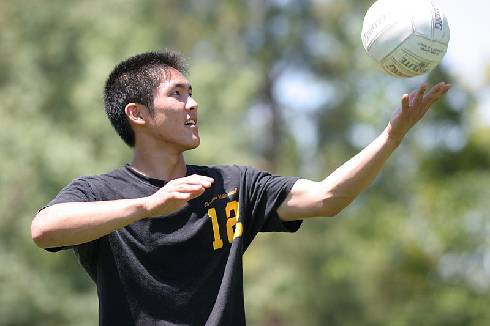
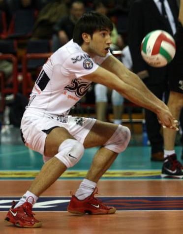

Estilo de juego basico
Servicio o saque

Iniciando el lanzamiento del servicio.
Un jugador efectuando un salto en suspensión para el saque o servicio.
El salto permite realizar más alto el golpeo y por lo tanto facilita atravesar
la red e impactar más fuerte.
Cada punto se inicia con un saque del balón desde detrás de la línea de fondo.
Se lanza el balón al aire y se golpea hacia el campo contrario buscando los
puntos débiles de la recepción del adversario. Se puede hacer de pie o en salto.
Es importante la orientación del saque porque el jugador contrario, que se ve
obligado a recibir el tiro, queda limitado para participar en el subsiguiente
ataque. Para ejecutar el gesto, el jugador zaguero derecho debe ubicarse en el
área de saque y esperar el sonido del silbato del juez. La pelota debe dejarse
caer o lanzarse al aire.
Cuando el balón es golpeado por el sacador, cada equipo debe estar dentro de su
propio campo, en el orden y forma con la rotación que corresponda (salvo el
jugador que realiza el saque). Los tres jugadores que están frente a la red son
los delanteros y ocupan las posiciones de 4 (delantero izquierdo), de 3
(delantero centro) y de 2 (delantero derecho). Los otros tres están detrás y
son los jugadores zagueros ocupando las posiciones de 5 (zaguero izquierdo),
de 6 (zaguero centro) y de 1 (zaguero derecho). Cada jugador zaguero debe estar
más lejos de la línea central que su delantero correspondiente.20
Las modificaciones en la normativa del saque han supuesto que el acto del
saque pase de ser una simple forma de poner en juego el balón a ser un arma
ofensiva.19
El saque en suspensión es donde se consigue desarrollar la máxima potencia.
Desde los 90 ha ido aumentando su uso hasta convertirse en la técnica
dominante en los equipos masculinos. La distancia para el saque que precisa
el sacador depende de la longitud de su zancada y el número de pasos empleados,
siendo habitual entre 3 y 5 m desde la línea de fondo. Los jugadores que
utilizan una carrera corta (2 apoyos) suelen hacer un lanzamiento previo al
desplazamiento a una o dos manos. Mientras que los que utilizan una carrera
más larga (3 apoyos o más) suelen lanzar el balón con la mano dominante, bien
al inicio o bien con la carrera ya iniciada. Este lanzamiento requiere más
altura y profundidad y es difícil de coordinar pero permite un mayor impulso
en el salto del sacador. La acción de batida y golpeo es igual a la del remate
ante la red.21
Recepción

Recepción.
La recepción es interceptar y controlar el balón que viene del saque del equipo
contrario. La recepción del saque es una técnica crítica en voleibol, que debe
entrenarse mucho hasta ser bien dominada. Además de la dificultad técnica que
supone contrarrestar la fuerza que trae el balón, el pase resultante de esta
recepción debe llevar el control y dirección precisos hacia una zona específica
de forma que asegure armar un buen ataque para obtener el punto. Por tanto este
golpe necesita la máxima precisión y el gesto habitual para hacerlo es el pase
de antebrazos.22
Es el primer golpeo del equipo para construir su ataque cuando no está en
posesión del saque. La importancia de la recepción del saque estriba en que es
un primer paso necesario para la construcción de un ataque eficaz, pues si la
recepción es defectuosa, el balón llegará mal al colocador (o no llegará) y no
permitirá construir un ataque eficaz. Por tanto los objetivos de la recepción
son neutralizar el saque contrario y facilitar al máximo la construcción del
ataque propio, colocando el balón en las mejores condiciones posibles.22
El pase con los antebrazos, el habitual en la recepción, se hace extendiendo
los codos totalmente y realizando una rotación externa de los antebrazos de
forma que el golpeo se hace con la cara interior de los mismos. La zona de los
brazos en el momento del contacto con el balón precisa que las manos estén
unidas con los pulgares juntos, paralelos y simétricos.